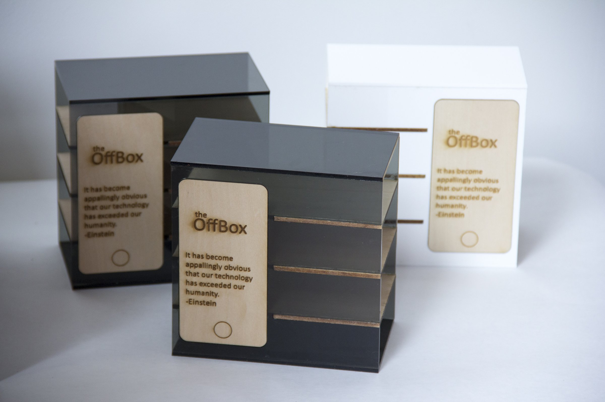
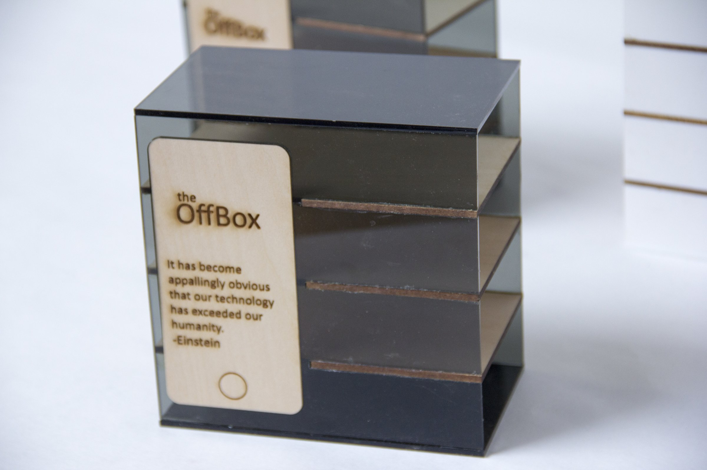
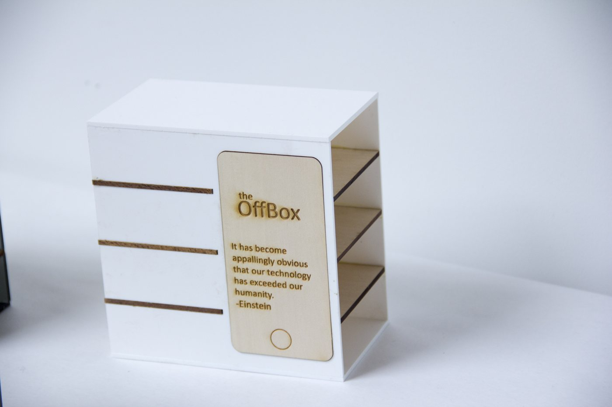
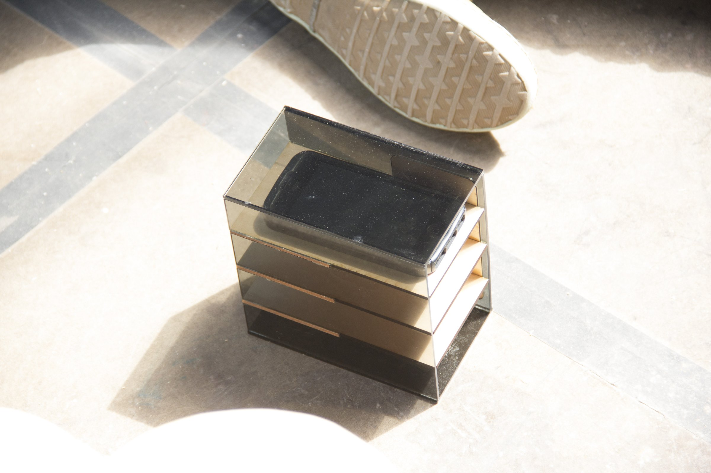
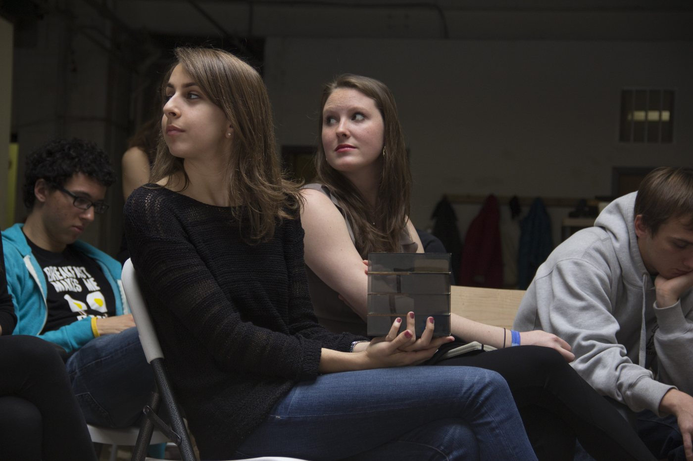
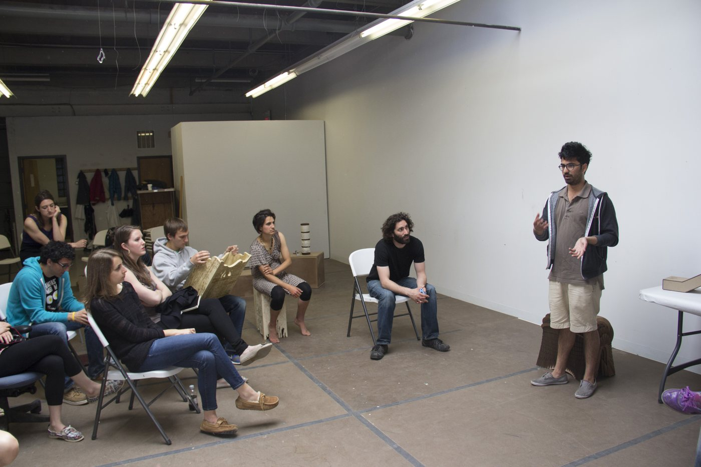

Product / Social Object
2013
Rhino
Laser cutting
Acrylic
Wood
Furniture / Interactive
The OffBox is a small box for a table or café booth where people put their phones away while they are with each other. It was designed in a studio full of people making things for phones — docks, chargers, passive speakers, 3D-printed cases — and it was a deliberate step in the other direction: a design for getting some distance from the phone instead of getting closer to it.
After a lot of debate and a lot of struggle, the design settled on a stacked box with slots for a phone. Nothing locks. The phone is not restrained and anyone can take it back whenever they want. The OffBox is only a physical reminder of how much a phone can pull attention away from a date, a dinner or a conversation, and sometimes a friendly reminder is enough.
The photographs show two versions: a smoked-acrylic box and a white one. Each has a laser-engraved wooden phone panel with the OffBox mark and a line attributed to Einstein: "It has become appallingly obvious that our technology has exceeded our humanity." A group discussion and a prototype in use are also documented.





